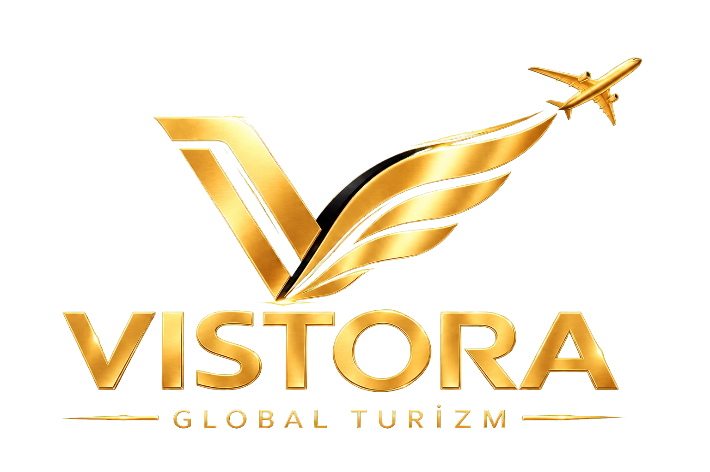
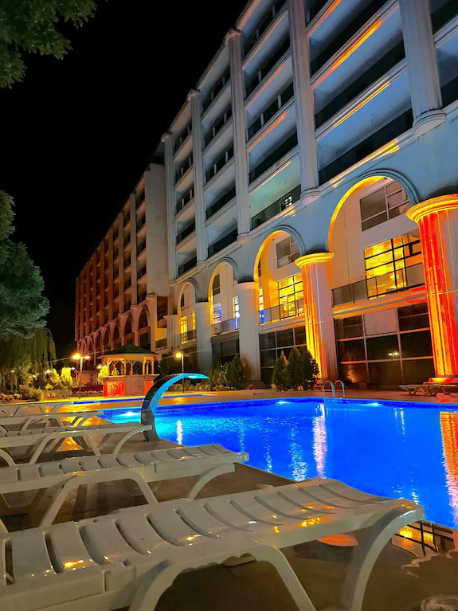
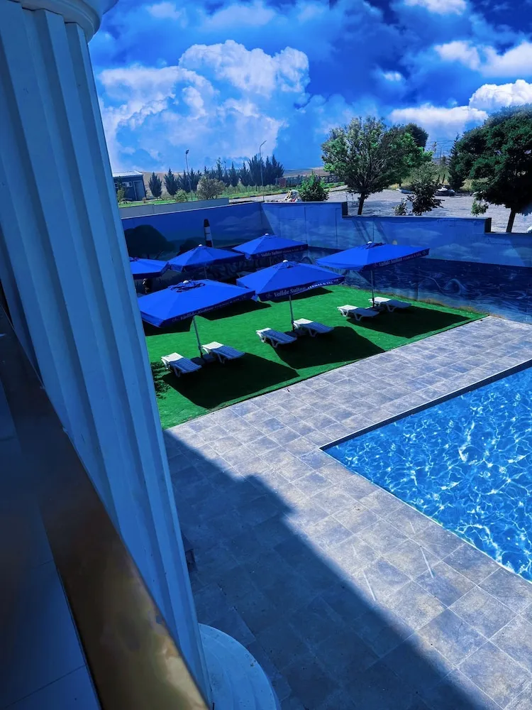
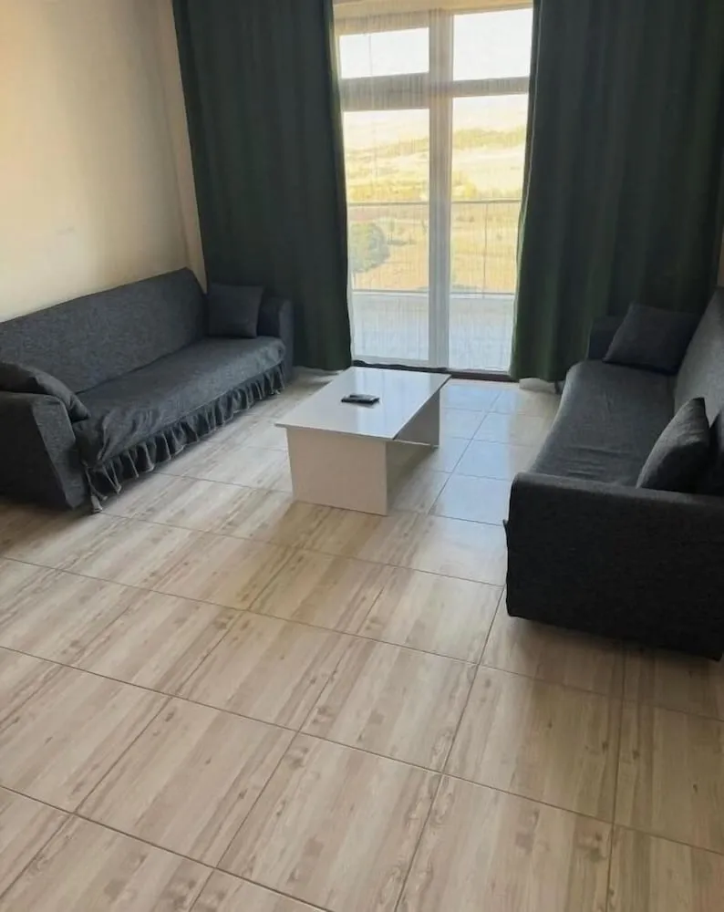

Termal & SPA
2 kapalı havuz, açık havuz, kaplıca, hamam ve sauna.


Valide Sultan Termal Otel & SPA'da açık ve kapalı havuzları, özel jakuzili konaklama birimlerini ve geleneksel termal deneyimi keşfedin.
Vistora Global Turizm; otel yönetimi, turizm yatırım danışmanlığı, operasyonel süreç optimizasyonu ve marka geliştirme alanlarında güvenilir çözümler üretir. Yatırımı planlamadan işletme deneyimine kadar her adımı aynı özenle yönetir.
Operasyonel süreçleri iyileştirir, hizmet standardını yükseltir ve misafir memnuniyetini sürdürülebilir biçimde artırırız.

Ankara'nın Ayaş–Güdül termal hattında yer alan Valide Sultan; 150 konaklama birimi, termal alanları ve daire konforundaki yaşam modeliyle sağlık, dinlenme ve uzun konaklamayı bir araya getirir.
2 kapalı havuz, açık havuz, kaplıca, hamam ve sauna.
Özel jakuzi, yerden ısıtma, mutfak ve balkon veya veranda.
Yerel kahvaltı, restoran, kafe ve özel yemek alanı.
24 saat resepsiyon, ücretsiz Wi-Fi ve otopark.
Özel mutfak, balkon veya veranda, yerden ısıtma ve jakuzili banyo olanaklarıyla uzun konaklamalara uygun bir yaşam deneyimi.

Salon, mutfak, balkon veya veranda ve jakuzili banyo ile uzun konaklamaya uygun fonksiyonel çözüm.
Kapalı termal havuzlar, geleneksel hamam, sauna ve özel jakuzili konaklama birimleriyle bedeni ve zihni dinlendiren bütüncül bir deneyim.
Açık ve kapalı havuz seçenekleriyle dört mevsim dinlenme.
Mermer dokusu ve klasik hamam atmosferiyle arınma alanı.
Konaklama birimlerinde mahrem ve kişisel rahatlama deneyimi.
Termal deneyimi tamamlayan sakin ve dengeli dinlenme alanları.
Konaklama, termal SPA veya turizm yatırım danışmanlığı için bilgilerinizi bırakın; mesajınızı doğrudan WhatsApp üzerinden iletin.